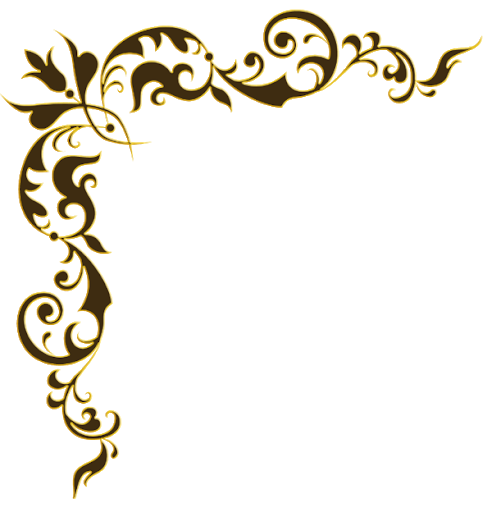

Click here if you want to read it
Judith Hampton was as beautiful as she was proud, as purposeful as she was loyal. The dear Scottish friend of her childhood was about to give birth, and Judith had promised to be at her side. But there was another, private reason for the journey
from her bleak English home to the Highlands to meet the father she had never known, the Laird Maclean.

Click here if you want to read it
Small-town reporter Leah Nash has a plan. She's rebooting her career with a true-crime book based on a major story she broke. Until it's published, she's trying to keep her head down under the icy glare of her new boss at the Himmel

Click here if you want to read it
Helena Walker can't believe Prince, Flynn Evans, asked her to be his fake girlfriend. After being hounded by his parents to get married by his twenty-first birthday and being chased by dozens of princesses, Flynn grows desperate to get them
to lay off, so he asks Helena, his servant and childhood best friend, to be his girlfriend. The two start a fake relationship and as the two grow closer, Helena grows to learn why Flynn cut her off a year ago and why her heart only moves
for the man she serves.